Presenter information
Below is information for presenters at SALT30. Please let us know if you have any questions: salt_30@cornell.edu.
Important dates
- July 15: Submit abstract with names (post to our OSF or email)
- August 12: Deadline to sign up for PUM
- August 13: Submit prerecorded videos, suggested date to upload everything to OSF
- August 17 – 20: SALT30!
- August 20 – September 30: Proceedings due
OSF
Asynchronous parts of SALT 30 will be hosted on OSF Meetings, a free poster and presentation sharing service for academic meetings and conferences.
Each presentation at SALT 30 will have its own OSF page on the SALT 30 repository. You can upload your abstract as well as videos, slides, handouts, a poster, or a paper draft to your presentation page. Enabling comments on your project page will facilitate asynchronous discussion of your research.
Please upload your abstract to our OSF repository by Wednesday, July 15 2020, with your names added, and we will link to it in the program. Additional material can then be added to your OSF page. If you do not want to create an OSF page, please send us your abstract with names added by the same date, July 15.
If you are recording a lightning talk, we will need these videos by Thursday, August 13 2020 so that we can prepare them for the lightning talk sessions. Other prerecorded videos are also due at this time. You can email them to us or upload them to OSF and send us the link.
Presentation Options
To accommodate presenters and participants across the globe, we have several different presentation options. If you have not let us know your preference, please do so as soon as you can.
- Paper sessions: 30 minute talk, 10 minute questions
- Poster sessions: 3 minute lightning talk, 1 hour discussion
- Invited talk sessions: 45 minute talk, 15 minute questions
Live talk, live questions
For paper presenters: you can give your talk and questions live in a scheduled time slot. If you would like to record your talk and make it available afterwards, you can record it on your local computer and post it to your OSF page afterwards. If you do so, please announce this at the beginning of your talk.
We encourage you to also post materials to your OSF project page (e.g., handout, slides, paper draft) so that conference attendees in different time zones can engage with your material.
Prerecorded talk, live questions
You can prerecord your talk, have it played in a particular time slot, and answer questions live afterwards. This will include all lightning talks: all lightning talks for a poster session will be played, to be followed by individual discussion rooms for each poster.
We encourage you to also post materials to your OSF project page (e.g., video, handout, slides, paper draft) so that conference attendees in different time zones can engage with your material.
Asynchronous Only
The asynchronous only option means that you will be interacting with your presentation audience through your SALT OSF page only. We encourage you to upload your materials (e.g., video, handout, slides, paper draft) by August 13th and also turn on comments on your project page at least from August 13 – August 20, 2020, through the end of the conference.
To count as having presented at SALT30 for the sake of the proceedings, presenters must at least upload a poster, handout, or slides to OSF.
Uploading Materials to SALT's OSF Repository
Instructions on the OSF page are shown here:
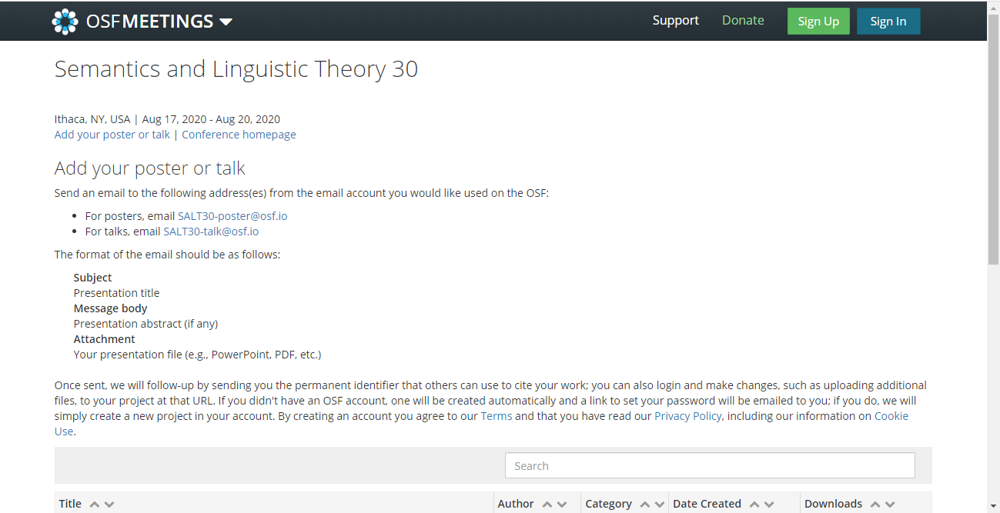
For posters, email
SALT30-poster@osf.io
For talks, email
SALT30-talk@osf.io
The format for the email is as follows:
Subject: Presentation Title
Message body: Here you can put a short
abstract for you presentation.
Attachment: Attach any presentation files.
You can also add them later through the site.
Send this email from the email address that you want to use for your OSF account. If you do not have an account yet, you will get an email to set one up once you have sent the above email.
Note: If you already have an OSF account, follow the above instructions using the email address associated with your OSF account. If you manually create an OSF project it will not automatically be linked to the SALT repository.
Here is an example of the email format for poster presentations:
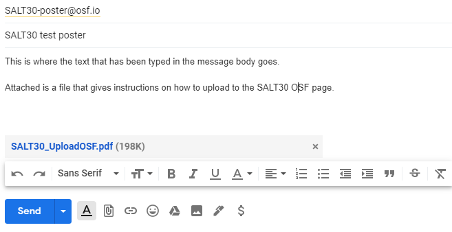
Shortly after sending in the email. Your presentation page will be
available on the SALT30 OSF page:
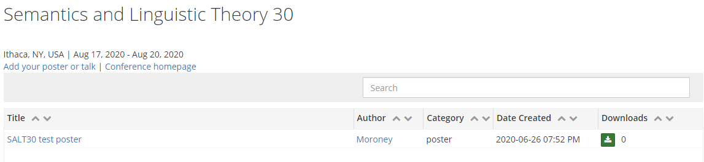
Your project page will look like this:
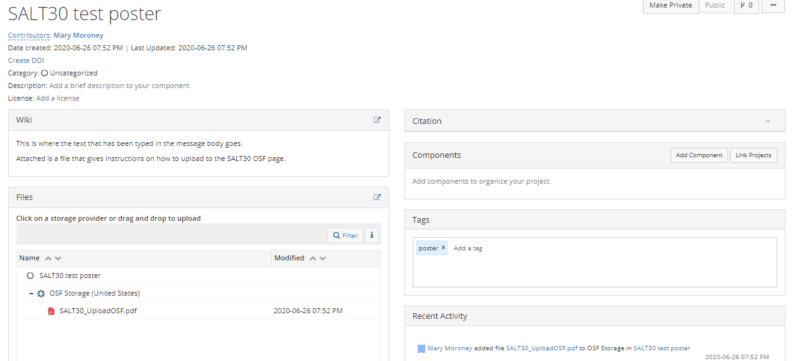
The title will match the one in the email. The email body appears in the 'Wiki' section. You can also use this section add links, set up open meeting times, or anything else you would like.
Editing Your OSF Project page
If you are logged in to OSF, you can edit your project page. The project page has several tabs at the top where you can go to edit your page. You can also add tags or keywords to describe your presentation by typing them into the `Tags' box.
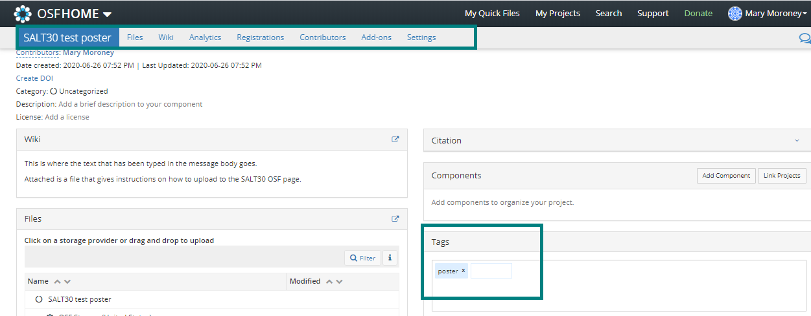
Uploading more files is easy. Simply drag the file from where it is stored on your computer and drop it in the area of the `Files' box. You can also go to the `Files' tab at the top of the page and do the same.
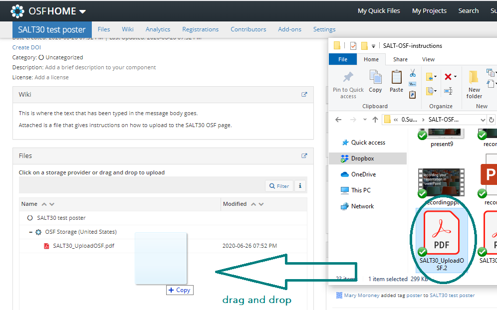
If you go to the `Files' tab, you can edit files that you have already added. When you click on a file, you have the option to download, view, delete, check out (make it so other contributors cannot change it), or rename the file.
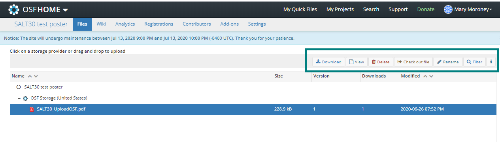
Going to the `Wiki' tab allows you to edit the text in the `Wiki' section. In the upper-right corner you can choose to view or edit this section. You also have the option of comparing the current version to a previous version. Make sure to click `Save' at the bottom of the editing box to apply your changes.
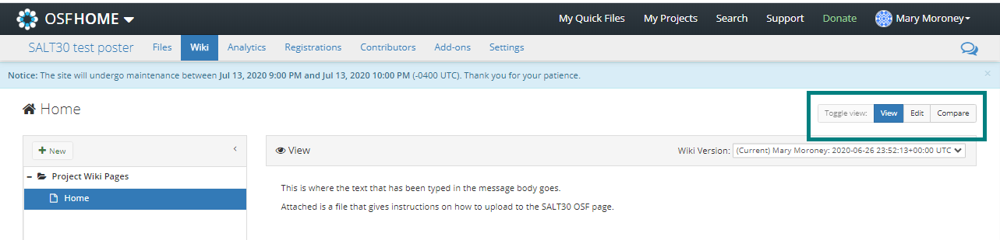
When you are in edit mode, you can do things like add links. The editor uses Markdown syntax, but you can just use the buttons to format the text.
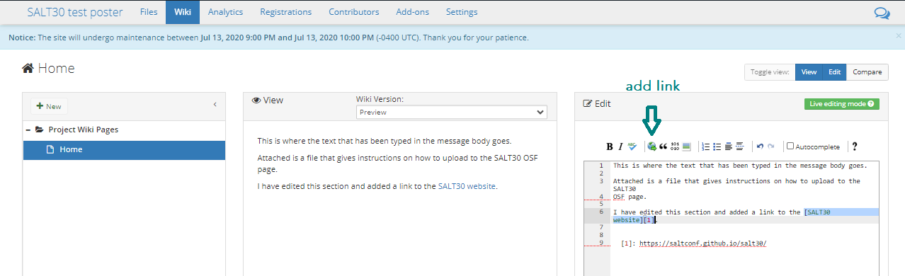
The `Analytics' tab shows you how many visits your project page has gotten, when these visits occurred, among other information.
If your presentation has multiple collaborators, you can add them to your project through the `Contributors' tab.
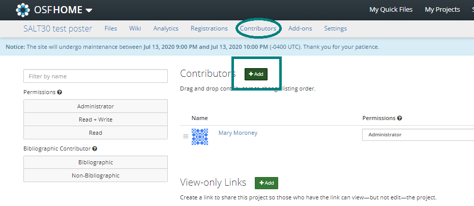
If they have an OSF account, you can search for them to add them. If they do not have an OSF account you can add them as an unregistered contributor using their email. You can give them access to view and/or edit the project page. You may also want to make sure they are listed as a `Bibliographic Contributor'.
The `Settings' tab allows you to do things like change the project name, delete your project, and change notification settings.
On your project landing page, the speech bubble in the upper-right corner allows you to view and respond to comments on your project. While your project page is public any OSF user can comment on your project page. If your project pages is private, it will not be shown on the SALT repository.
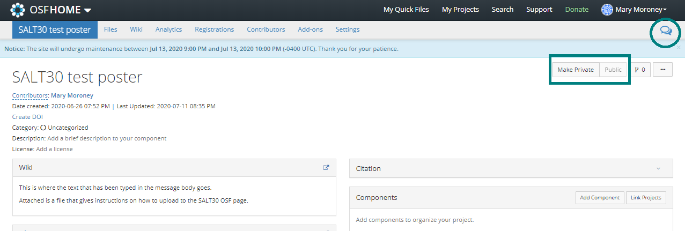
Pre-recording your presentation
If you will be pre-recording your presentation, please email us the file or upload it to OSF and send us the link at salt_30@cornell.edu by Thursday, August 13 2020.
Please keep to the allotted time for your presentation (3 minutes for lightning talks, 30 minutes for talks, 45 minutes for invited talks).
To record a presentation using PowerPoint:
GLOW43 gave several other suggestions for how to pre-record presentations: GLOW43 Instruction for Presenters.
If you would like to request an instructional video for how to record using a particular format or if you want to request technical help for recording or posting your materials, please email salt_30@cornell.edu.
Proceedings
All presenters at SALT30 may publish in the proceedings. An email will be sent to authors by the editors, but some information is below. Further information available on our proceedings page.
The page limit is 18 pages for talks and posters (24 pages for invited talks). This does not include references, but does include all other material.
Papers will be accepted from the final day of the conference, August 20, until September 30, 2020. We know this is a compressed timeline for writing up the papers, but we want the proceedings to have the same year as the conference, despite the delated conference date due to the pandemic.
Drafts of the proceedings paper can be posted on OSF before your presentation, if you want. Some audience members may look at the full paper beforehand and it could provide the opportunity to engage in a detailed way.